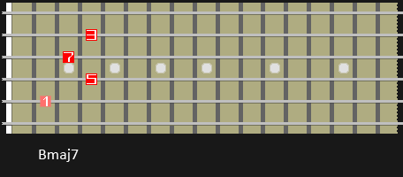
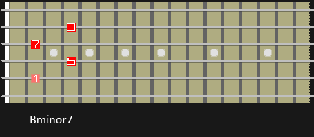
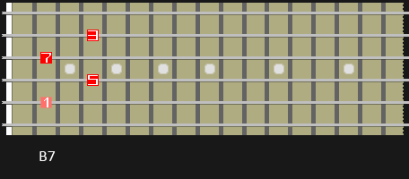

GROWL
I'd rather be playing guitar
FR
 EN
EN
There is a reason I put comping in the article title between bunny rabbit ears ("comping"). See, I did it again. Comping is a loose jazz term that (to me) means accompaniment with variation. A comping part in jazz will usually be played by the rhythm section, often guitar or piano. Jazz being jazz, this often doesn't mean a steady stream of the G major chord if the piece is in G. The jazz idiom is full of really crafty and interesting accompaniment where the comper is either massively supporting the soloist, or the comped part itself stands alone. In that sense jazz is far more of an integrated form of music than say a rock foursome. I've been a jazz fan for a few years and have been trying to get the sound for a couple. Whilst I've got the scales under my fingers and some of the rhythms into my playing, that comping technique is ellusive. Further to that point, this article is less about me sharing knowledge and more me thinking out loud. I am in the process of learning this and these exercises are helping me. I do not claim or pretend to be an expert.
THE SOUND
The comping sound in jazz features LOTS of chords overlaid on the chord progression of the piece (aka "the changes"). If we take an example of the classic 2-5-1 progression in B, we'd use C#minor, F#7 and Bmaj7 chords or close variations. The person comping wouldn't just hit those chords twice a bar though, they'd use inversions and extensions of those chords. In a bar of F#7 for example we might end up hearing all the inversions of F#7 in sequence descending toward the root position F#7.
I am going to make this article theory light. There is a LOT I could say about harmony here because of the importance of comping not to interfere with the bassline and with the melody/soloist. Also if you are playing the jazz comping style alone, you still need to be stressing the important chord measures that clue anyone listening into the structure of what you are playing. Here then is a short list of dos and don'ts or rather cans and can'ts.
- - The 5th of a chord can be dropped most easily
- - The root of a chord can be ignored
- - The 3 and 7 are most important and can be used alone
- - Avoid tensions that form dissonance with the melody
- - Comply with the root motion of the chord progression
WHERE TO START
If you want to play jazz then you need to learn to play chord inversions. I have bought and studied some great material on this but most so far has been of the "learn these chords", or the "do this change" variety. I can dig that but to me it doesn't strike at the heart of how to comp. I look at comping as IMPROVISING WITH CHORDS. Whilst you don't have the same freedom as a soloist, you are certainly at liberty to explore the range of fitting chords for a progression. But that leaves us with a problem; do we really need to learn by rote every single variation of a chord and practice them in sequences? I think the answer is yes and no. It can't hurt to have fallback sequences of chords that you can bust out. But I really think the final goal should be to choose and apply a chord in realtime, not pick from a mental list of learned sequences.
So, given the list of dos and don'ts and the aim of freely chosing and applying chords I think a great starting point is to analyse the 3-7 interval; the beating heart of our generic chord. We can actually play the 3 and 7 of our chord alone as a two note chord. Learn where these fall and interact on the fretboard and we have a route into the blizzard of comping possiblities.
Here is a B major 7 chord. From there, I've marked all of the 3rds of this chord and where they appear on the fretboard. These follow what I call an octave pattern. Lastly I have mapped out the positions of the 7ths of the chord too. The 7s of the chord all land at the same predictable intervals on the fretboard from the 3s. The next two diagrams show the same process for a Bminor chord and a B7 chord.
  A QUICK ASIDE : I recommend playing the octave pattern daily. Start with the root of a chord, then play it for all the fifths of the chord, then thirds etc... It is a GREAT way to get to know where notes fall on the fretboard and how chords overlap.
If you want to follow along from here grab a 2-5-1 backing track, or record a quick loop and you are ready!
We all know how to play octaves right? Brilliant, so lets just play octaves but of the 3 of our generic chord. So continuing the example of Bmaj7, we just play all the 3s (D#) on the neck IN ANY ORDER AND TIME for that bar. You can try that now against the backing track using the 3 of each chord in your 2-5-1. Eg: in C#min7-F#7-Bmaj7 I would play all of the Es against C#min7, then all the A#s against F#7 then all of the D#s against Bmaj7.
Easy right? Fingering the 3 and the 7 in two or three places on the neck within a bar is also not so hard. Go ahead and play against the 2-5-1 progression but this time using the 3-7 two note intervals. Maybe try hitting two 3-7 pairs per bar in either an ascending or descending pattern; your choice. And just like that, we're comping! Also, don't just play 3-7, mix it up with 7-3 intervals too.
EXTENSION
What I hope I have done here is provide a way to get started with comping that doesn't tie you slavishly to examples. Although all we have so far is the ability to hit the functional interval in the right place in a progression we can do it IN REAL TIME and with variations.
You can probably guess the next step of my process. Play all of the 3rds of your 2-5-1 again. Then think about the interval each 3 forms with the 5 of a chord on the fretboard. Then, play those 3-5 intervals with variation along with your 2-5-1.
What comes next is where you start to hopefully sound pro. Combine the 3, 5 AND 7 to form three note chords. You know how to form the intervals as you have practiced them separately. Just get your fingers to their places and you've done it! Feeling brave? Try playing the 3 of the chord against the 9! Then merging that into a 3-7-9 chord. And keep varying which note; 3,7,5 or 9 sits lowest in your chord.
As I said at the start, I really don't claim to be an expert on this. I am in fact telling you what I am doing right now as I try to learn this stuff. It just seems to me that this is a good mental process for breaking into comping. It is methodical and it is additive. I would love to hear from anyone who tries it!